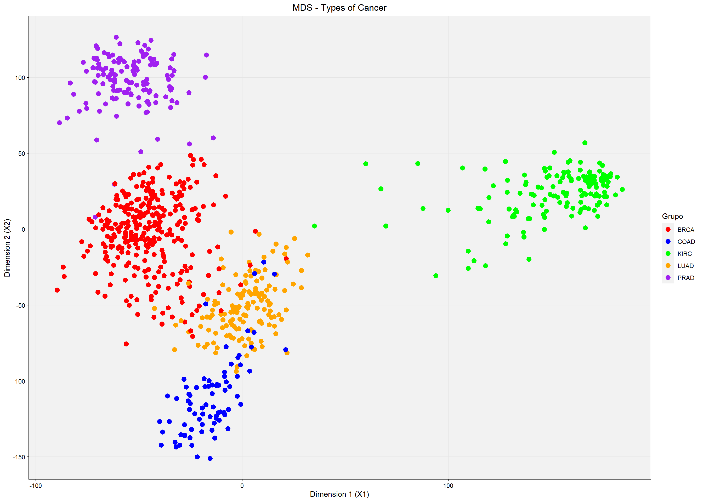
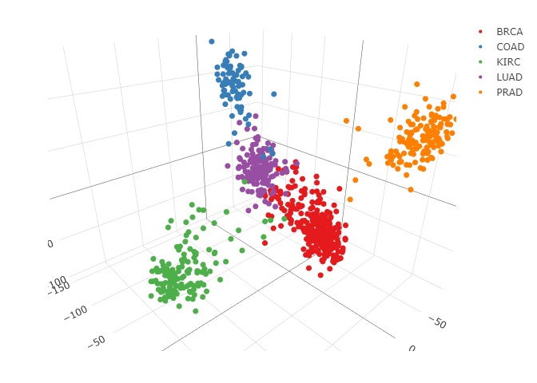
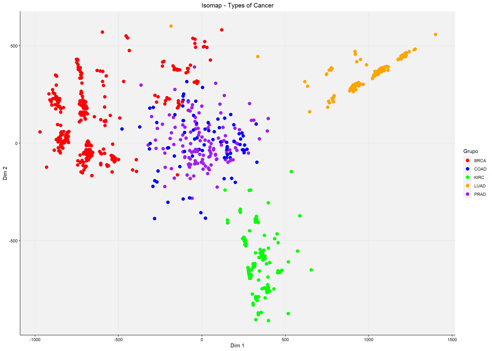
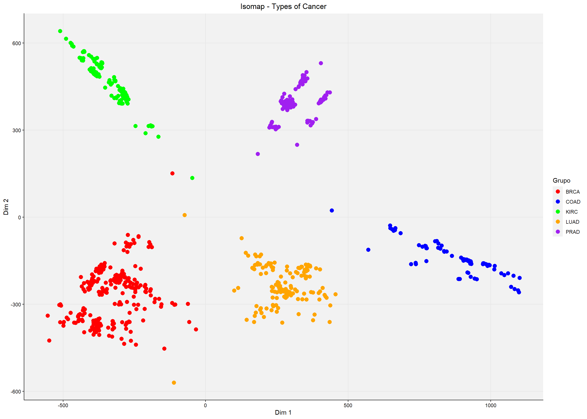
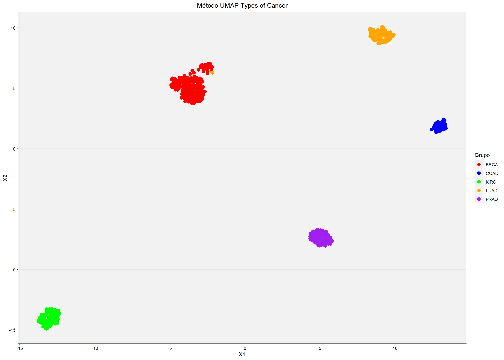
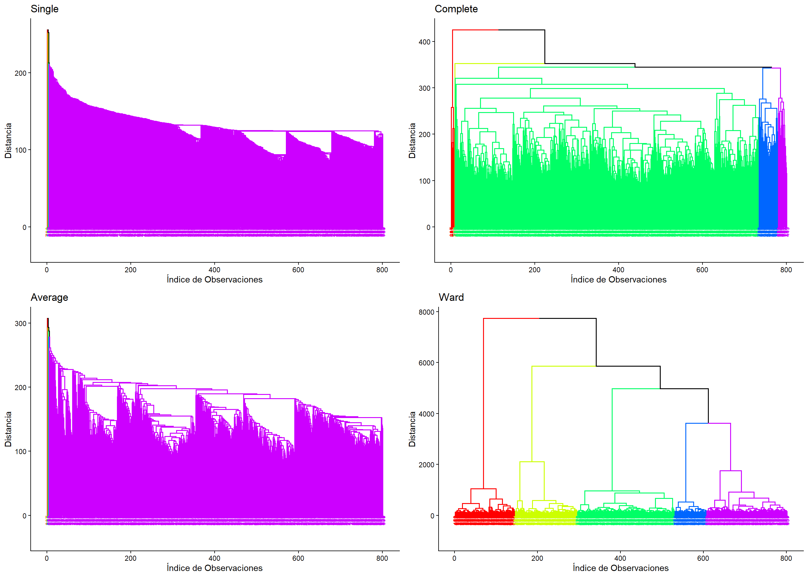
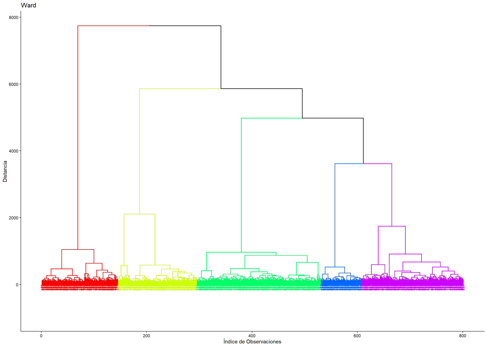

DIMENSIONALITY REDUCTION METHODS
These are the selected methods and the final conclusions:
- MDS Multidimensional scaling
- Isomap Isometric mapping.
- Umap Uniform Manifold Approximation and Projection.
- Clustering Agglomerative hierarchical clustering method.
- Conclusions The final conclusions of the assignment.
Preliminary steps
First, we need to load all the libraries and data we'll use for the analysis. On one hand, we load the data from "data.csv" as a matrix, in which row 1 corresponds to our patients' samples — note that in our matrix this will not be treated as an extra gene column but as the row names. "labels.csv" is a data frame that links these sample names to the type of cancer the corresponding patient has.
library(plotly)
library(stats)
library(uwot)
library(RDRToolbox)
library(dplyr)
library(factoextra)
library(ggdendro)
library(cluster)
library(ggplot2)
library(gridExtra)
library(pheatmap)
library(tidyr)
labels.raw <- read.csv('labels.csv')
data <- as.matrix(read.csv("data.csv", row.names = 1))As we can see in the resulting matrix, we have 801 patient samples and 20,532 genes studied, which clearly gives us a dimensionality problem. To solve this we need to use different techniques or tools that allow us to reduce all this data down to a level of dimensions that is understandable and interpretable. There are many such techniques we could use, but in this assignment we'll focus on 4 different ones, chosen to illustrate different challenges we may encounter when reducing dimensionality. We'll walk through the reasoning behind our choices and how we handled both the data and the parameters that can be tuned in each method.
MDS
The first method we decided to use is MDS (multidimensional scaling). It's a method that measures the distance between different samples or points and groups them accordingly. This distance can be measured in different ways. Although in this case we chose to use the most common one, Euclidean distance, other distances also exist, such as "Manhattan" or "Hamming" distance. This method also lets us choose the number of dimensions in which to represent our results. Initially we'll visualize them in 2 dimensions.
distances <- dist(data, method = 'euclidean') # distance matrix
mds.results <- cmdscale(d=distances, eig=TRUE, k=2, x.ret=TRUE) # the cmdscale function performs the MDS
varianza.explicada <- mds.results$eig/sum(mds.results$eig) * 100 # explained variance
mds.df <- data.frame(mds.results$points) # convert the MDS output into a data frame
ggplot(mds.df, aes(x=X1, y=X2, color=labels.raw$Class)) + # finally, plot
geom_point(size=3) +
scale_color_manual(values=c("red", "blue", "green", "orange", "purple")) +
labs(title="MDS - Types of Cancer", x="Dimension 1 (X1)", y="Dimension 2 (X2)", color = "Grupo") +
theme_classic() +
theme(panel.grid.major = element_line(color = "gray90"), panel.grid.minor = element_blank(),
panel.background = element_rect(fill = "gray95"), plot.title=element_text(hjust=0.5))

As we can see in the plot, many points are not well separated, and although our 5 clusters (for the 5 different diseases) are already visible, we don't think this is a good separation. For this reason we decided to try visualizing it in 3 dimensions to check whether we could better distinguish the different groups. To do this we need to change the k parameter, which corresponds to the number of dimensions.
mds_result <- cmdscale(distances, k = 3) # same as before, but for 3 dimensions
mds_df <- as.data.frame(mds_result)
colnames(mds_df) <- c("Dim1", "Dim2", "Dim3")
mds_df$Cancer_Type <- labels.raw$Class # add the cancer labels
fig <- plot_ly(mds_df, x = ~Dim1, y = ~Dim2, z = ~Dim3, # plot
color = ~Cancer_Type, colors = "Set1",
marker = list(size = 4))
fig 
Visualizing the results in 3 dimensions, we can much more clearly see the 5 distinct groups. This is a very interesting way of solving the initial problem, but it comes with its own set of drawbacks. The first and most obvious is that we can't always display 3D plots, since not every medium supports them — even less so outside a digital format. Another drawback of MDS is that it can be computationally expensive, since it requires calculating the distance between every pair of points.
Isomap
As our next method we'll use one related to the previous one, Isometric mapping (Isomap). Like the previous method, it seeks to measure distances between points in order to form groups, but this time the distance used is geodesic distance. This distance is calculated over a surface that varies depending on how the dataset is arranged. This arrangement is mainly determined by what we consider the number of nearest neighbors, or K. This is the main parameter we'll tune to obtain a better clustering result. Initially, we'll use K = 5.
set.seed(1234)
isomap.results = Isomap(data=data, dims=1:10, k=5, plotResiduals=FALSE) # isomap from 1 to 10 dimensions with 5 neighbors. We set plotResiduals=FALSE to skip the explained-variance plot
isomap.df <- data.frame(isomap.results$dim2) # data frame with the points to plot in the 2D plane
ggplot(isomap.df, aes(x = X1, y = X2, color = labels.raw$Class)) +
geom_point(size = 3) +
scale_color_manual(values = c("red", "blue", "green", "orange", "purple")) +
labs(title = "Isomap - Types of Cancer", x = 'Dim 1', y = 'Dim 2', color = "Grupo") +
theme_classic() +
theme(panel.grid.major = element_line(color = "gray90"), panel.grid.minor = element_blank(),
panel.background = element_rect(fill = "gray95"), plot.title=element_text(hjust=0.5)) 
With k=5 we see that the separation isn't very good, so we decided to keep increasing this number until we got a better result. Increasing it, we reached K=15, which gave us the following result.
set.seed(1234)
isomap.results = Isomap(data=data, dims=1:10, k=15, plotResiduals=FALSE) # this time k=15
isomap.df <- data.frame(isomap.results$dim2)
ggplot(isomap.df, aes(x = X1, y = X2, color = labels.raw$Class)) +
geom_point(size = 3) +
scale_color_manual(values = c("red", "blue", "green", "orange", "purple")) +
labs(title = "Isomap - Types of Cancer", x = 'Dim 1', y = 'Dim 2', color = "Grupo") +
theme_classic() +
theme(panel.grid.major = element_line(color = "gray90"), panel.grid.minor = element_blank(),
panel.background = element_rect(fill = "gray95"), plot.title=element_text(hjust=0.5))

Here we can already observe a clear separation into groups for our 5 diseases. This method turns out to be effective for our purpose; however, finding the right value for K can be very difficult, and in some cases it may not be possible to find one at all. This is a limitation this method can have.
Umap
Next, we decided to use Uniform Manifold Approximation and Projection (UMAP). This is a very complex dimensionality reduction method that assumes the available data sample is uniformly distributed across our topological space. This space can be approximated and projected onto a lower-dimensional space. To do this, it first seeks to define the structure of the topological space, and then looks for the best way to represent that structure in a lower-dimensional space.
set.seed(1234)
umap.results <- umap(data, n_neighbors=0.15 * nrow(data), # here we decided not to touch any parameters except the number of nearest neighbors
# which is the n_neighbours parameter
n_components = 2, min_dist = 0.1, local_connectivity=1,
ret_model = TRUE, verbose = TRUE)
umap.df <- data.frame(umap.results$embedding)
m_dist <- dist(umap.df)
ggplot(umap.df, aes(x = X1, y = X2, color = labels.raw$Class)) +
geom_point(size = 3) +
scale_color_manual(values = c("red", "blue", "green", "orange", "purple")) +
labs(title = "Método UMAP Types of Cancer", x = "X1", y = "X2", color = "Grupo") +
theme_classic() +
theme(panel.grid.major = element_line(color = "gray90"), panel.grid.minor = element_blank(),
panel.background = element_rect(fill = "gray95"), plot.title=element_text(hjust=0.5))

The UMAP method is very versatile and effective, but this also makes it more complex to work with. As you can see in the code, there's a large number of parameters that can be tuned in order to achieve an optimal result. For this reason, a very deep understanding of how the method works is needed to fully optimize it — otherwise this complexity and versatility can work against you. That said, as the plot shows, the separation into groups is very good and efficient — much better than the previous methods.
Clustering
Finally, to round off this assignment we decided to use a clustering method — more specifically, agglomerative hierarchical clustering. We chose to represent our results with a dendrogram, since it's a different approach from what we've seen so far in this assignment. A dendrogram is a tree-like graphical representation, shown upside down, that shows how a dataset groups together based on similarity. Each "leaf" of the tree represents an individual element — in our case, patients — and the intermediate nodes represent the groups or clusters that form. To interpret a dendrogram, it's also important to look at the height at which the branches of two leaves first merge. The lower this height, the more closely related they are. So the measure of relatedness between two leaves is read on the vertical axis, not the horizontal one. For agglomerative clustering, the dendrogram is built with a bottom-up approach: each of our observations or samples starts out as its own group, which then gets merged with other groups as the hierarchy progresses. These merges are made based on a calculated distance between groups. This distance can be measured in 4 different ways, and it's a parameter we can change in our code, which will give us 4 different dendrograms as a result.
We'll keep this in mind when building our dendrogram.
df <- read.csv("data.csv") # this time we read the .csv as a data frame
df_genes <- df %>% dplyr::select(starts_with("gene_")) # remove the sample-name column, keeping only the gene columns
df_genes_scale <- scale(df_genes) # normalize
When performing the clustering, we ran into several errors at this point. The cause of these errors was that the normalized data frame had several genes (entire columns) containing NaN, i.e. no data. So we first need to remove all these NaNs before performing the clustering.
df_genes_scale_tibble <- as_tibble(df_genes_scale)
df_clean_final <- df_genes_scale_tibble %>% select(where(~ !all(is.na(.)))) %>% drop_na() # remove all possible NAs
dist_matrix <- dist(df_clean_final) # distance matrix
# Run the agglomerative hierarchical clustering algorithm using the 4 different linkage methods
hclust_model_single <- hclust(dist_matrix, method = "single")
hclust_model_complete <- hclust(dist_matrix, method = "complete")
hclust_model_average <- hclust(dist_matrix, method = "average")
hclust_model_ward <- hclust(dist_matrix, method = "ward.D")
colors <- rainbow(5) # colors for the dendrograms
clust_single <- fviz_dend(hclust_model_single,
cex = 0.5,
k = 5,
palette = colors,
main = "Single",
xlab = "Índice de Observaciones",
ylab = "Distancia") + theme_classic()
clust_complete <- fviz_dend(hclust_model_complete,
cex = 0.5,
k = 5,
palette = colors,
main = "Complete",
xlab = "Índice de Observaciones",
ylab = "Distancia") +
theme_classic()
clust_average <- fviz_dend(hclust_model_average,
cex = 0.5,
k = 5,
palette = colors,
main = "Average",
xlab = "Índice de Observaciones",
ylab = "Distancia") +
theme_classic()
clust_ward <- fviz_dend(hclust_model_ward,
cex = 0.5,
k = 5,
palette = colors,
main = "Ward",
xlab = "Índice de Observaciones",
ylab = "Distancia") +
theme_classic()
grid.arrange(clust_single, clust_complete, clust_average, clust_ward, nrow = 2) 
As mentioned above, 4 different dendrograms are produced depending on the linkage method used. For the purposes of this assignment we're looking for compact, homogeneous clusters with very little internal variability. For this reason, the Ward method gives us the best results, since it's a method that seeks to minimize internal variance within a cluster. The resulting dendrogram is shown below; in it, 5 well-differentiated, compact clusters can be observed, which help us interpret our initial dataset.

Conclusions
We start this analysis with an advantage, since we already know our dataset. It consists of expression readings for 20,532 genes across 801 patients. These patients have been diagnosed with a type of cancer — 5 different types in total. So our search is focused on finding which of these methods let us group and plot the clusters formed by all patients diagnosed with the same type of cancer. This is why we say we start with an advantage: we'll focus only on those results that show a clear separation into 5 different groups, matching the 5 cancer types. Only this kind of result would make biological sense to us and could be useful. Having selected the four types of methods and tested them on our data, we can highlight some interesting aspects of each:
1. MDS: we can see that this method is easily interpretable and quite versatile, since we can play with several parameters, such as the number of dimensions (Fig. 1 vs. 2) or the type of distance calculated, depending on the kind of data we're working with. That said, we can also see that for our dataset it wasn't the most effective.
2. Isomap: this method gave us better results than the previous one, and we also consider it equally versatile. The point we chose to highlight is that tuning the k parameter to get good results can be quite difficult (Fig. 3 and 4).
3. Umap: this is the method that gives the best results (Fig. 5) and, by a wide margin, the most versatile. But this versatility comes at the cost of having many parameters to define, and therefore a very deep understanding of the method is needed to use it with the greatest precision. This is also why we find it the least accessible method initially.
4. Agglomerative hierarchical clustering: this method allowed us to look at the dataset from a different perspective, since dendrograms show, in a more visual way, the degree of relatedness between different clusters. On this occasion we'd highlight that it's very important to know your dataset and the goals you're pursuing in order to choose the right linkage method when clustering (Fig. 6 and 7).
Lastly, we should also add that all these methods were very computationally demanding. A possible solution to this could be selecting a smaller number of genes — for example, the first 500 — or choosing less demanding methods.